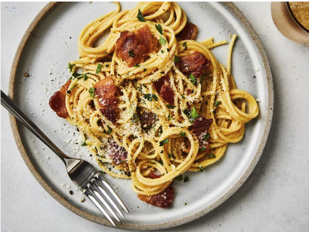

Home
Classic Spaghetti Carbonara
This classic Roman pasta dish is simple but packs a ton of flavor!

Recipe Description
Spaghetti Carbonara is a beloved Italian dish known for its creamy, savory sauce made with eggs, cheese, pancetta, and pepper. It’s a quick meal that feels elegant and satisfying, perfect for weeknights or special occasions.
Ingredients
- 12 ounces spaghetti
- 2 large eggs
- 2 large egg yolks
- 4 ounces pancetta, diced
- 1 cup grated Parmesan cheese
- 2 garlic cloves, peeled
- 1 tablespoon olive oil
- 1 teaspoon black pepper, freshly ground
- Salt, to taste
- 2 tablespoons chopped fresh parsley (optional)
How to Make Spaghetti Carbonara Step-By-Step
Follow these simple steps to create your own delicious Spaghetti Carbonara:
- Boil spaghetti until al dente, then drain and reserve 1/2 cup of pasta water.
- Cook pancetta in olive oil with garlic until crisp, then remove garlic.
- Whisk together eggs, egg yolks, Parmesan, salt, and pepper in a bowl.
- Add hot pasta to the pancetta pan and remove from heat.
- Quickly stir in the egg mixture, adding reserved pasta water as needed to create a creamy sauce.
- Garnish with parsley and serve immediately.